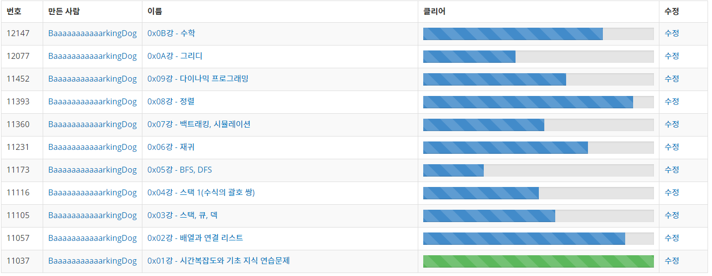

일단 기간이 6주 밖에 안되기 때문에
차근차근 차근차근 넓게 공부할 것인가
많이들 하는 입사 코테 준비용으로 할 것인가
나도 초짜 수준이라 커리짜기 어려워힝
여기저기서 긁어와서 대충 추려봤읍니다.
거의 대부분 Java보단 C++사용하는 글이긴 함
Java로 문제를 풀어보지 않은 사람도 있으니 입출력부터 차근차근 하는것도 괜찮을 것 같읍니다.
1) 라이 블로그
링크 : 링크
제일 유명한 블로그
글도 잘써놓고 글마다 추천 문제도 많음
2) 류트 블로그 커리
링크 : 링크
문제 잘 골라놓은 듯
3) 박트리 블로그 커리
링크 : 링크
업계 고인물중 하나
라이 블로그로 링크 걸어놓은 게 많긴 함
참고할만한 글 : 하나 , 두울
4) 빠킹도그 그룹 문제 커리

업계 고인물중 하나
커리 괜찮은거같아서 문제 루팡해올까함
블로그 주소 : 링크
1) 삼성 SW 코테 기출 문제집
링크 : 링크
삼성 준비는 기출이 최고긴함
+ 알파 하나
2) 오픈카톡 : 알고리즘 스터디방
사람 짱많은 오카방
삼성 대비 스터디 커리 퍼옴
1) 백준 강의에 있는 문제들 참고
이런건 강의는 너무 비싸고 이론같은건 알아서 공부해서 추천문제만 보면됨
링크 : 하나 , 두울
2) 삼성 SDS 교육
기본반 링크 : 링크
심화반 링크 : 링크
삼성 SDS에서 하반기에 진행한 스터디
과정 괜찮은데, 어떻게 진행했는지 문제 순서를 잘 모름
http://bitly.kr/gONaE
https://www.youtube.com/playlist?list=PLRx0vPvlEmdDHxCvAQS1_6XV4deOwfVrz
https://d2.naver.com/news/4850628
어뜨케 할까유?
어떻게하면 괜찮을지 자신의 생각을 A4용지 세장 내외로 정리해서 세절하세요